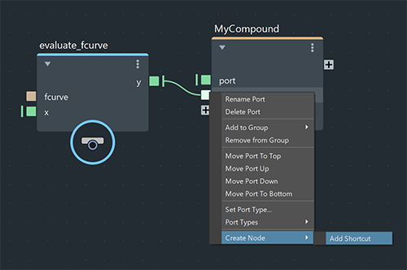
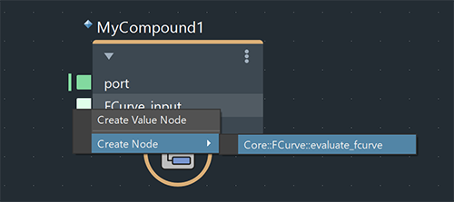

为节点添加有关创建以及连接到其输入端口的建议，您既可以节省自己的时间，也可以让使用您的已发布复合的其他用户节省时间。当经常一起使用某些节点时，这尤其有用。在端口的图标上单击鼠标右键时，会在“创建节点”(Create Node)子菜单上显示建议，其显示方式与 SRT_to_matrix 的 quaternion 端口显示 euler_to_quaternion 和 axis_angle_to_quaternion 相同。
只能在发布复合之前添加或移除建议。如果已发布复合，则向图表添加它的一个实例，然后在该实例上单击鼠标右键并将其设为可编辑，最后重新发布复合。同一复合的现有实例都将自动更新。
创建节点，并将其连接到复合的输入端口。
在端口上单击鼠标右键，然后选择“创建节点 > 添加快捷方式”(Create Node > Add Shortcut)。

现在，当您发布复合或断开其输入连接，然后在端口上单击鼠标右键并展开“创建节点”(Create Node)菜单时，刚刚添加的节点将列在子菜单中。
选择它，将创建节点并将其连接到端口。

要移除快捷方式，请在端口上单击鼠标右键，然后选择“创建节点 > 移除所有快捷方式”(Create Node > Remove All Shortcuts)。